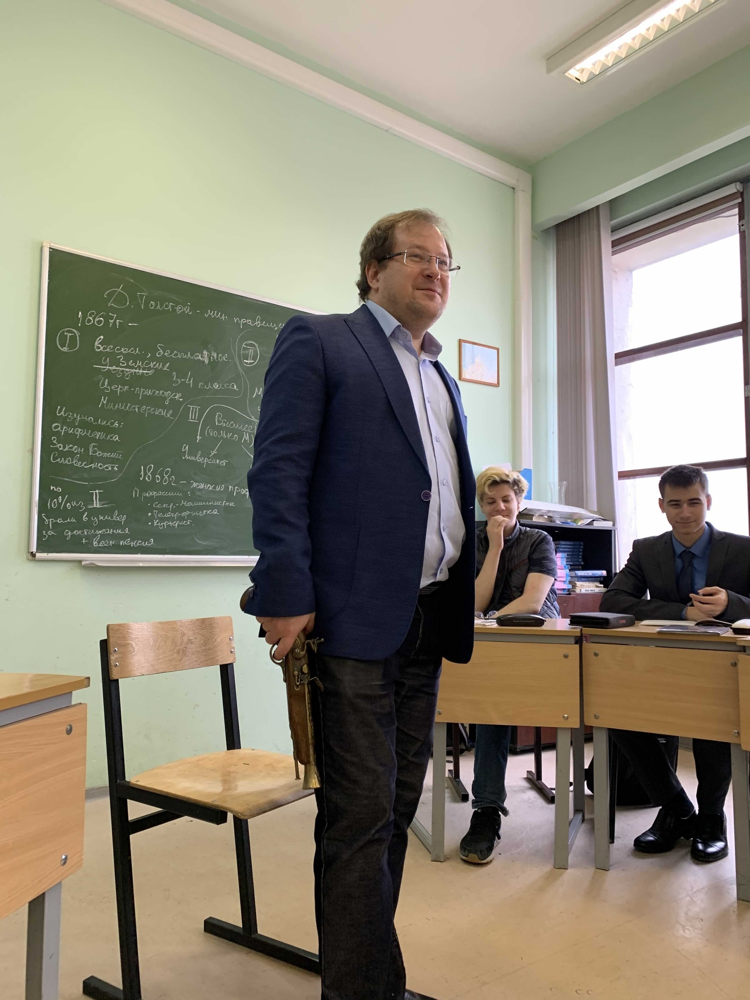
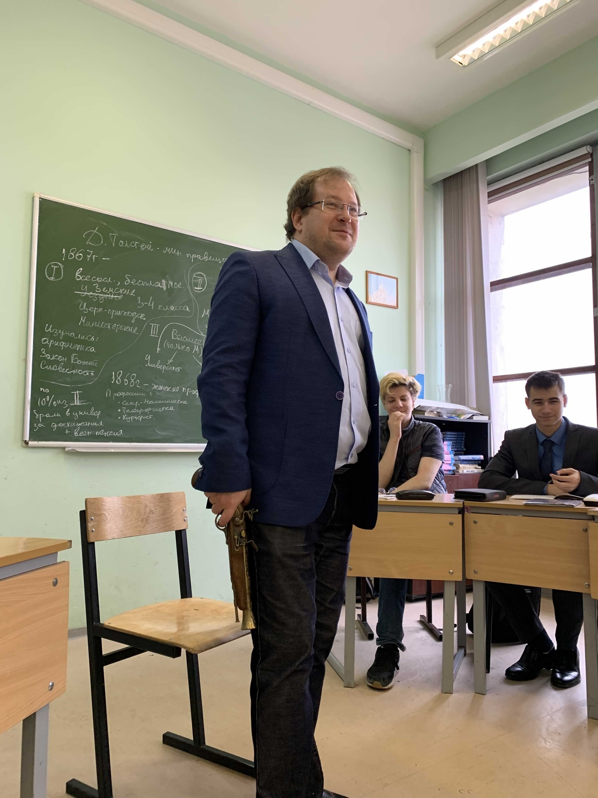
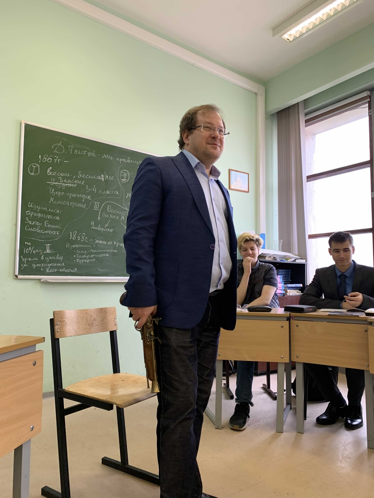
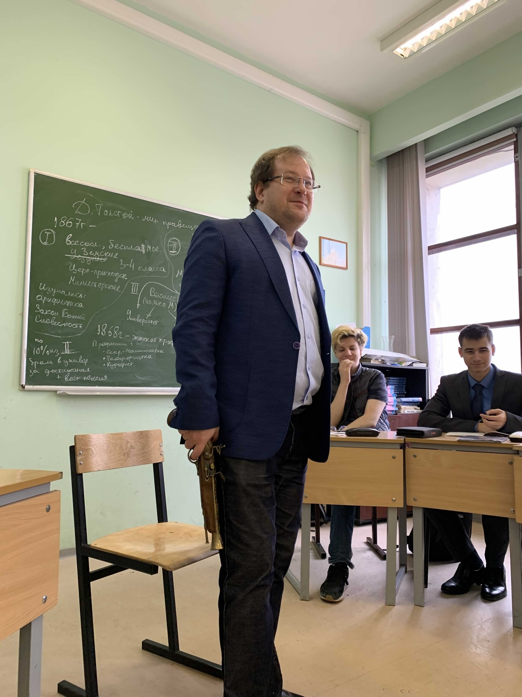

- Здравствуйте, Галина Львовна! Здравствуйте, Алекс.. андр Геннадьевич!
- А я тут вспомнил, что ничего не сдал Вам. Может, мне сейчас что-то сделать, чтобы закрыть долг? Так же можно? Пожаалуйста..
- Ох, дитятко ты мое, что ж с тбоой поделаешь!? Ладно, расскажи-ка мне про приход к власти большевиков
Здесь Квиз! Ни одного правильного ответа!
- Хорошо. Ленин, вернувшись из эмиграции в Финляндии, для поднятия духа своим единомышленников выступил на броневике. И спустя немного времени большевики произвели захват власти. Вот, даже картинку показать могу (можно и без нее)
- Мдаа, совсем не слушаешь ты меня на уроках. (имя), Ленин же незаконно вернулся в Россию. Да знаешь ли ты, что было бы с ним, если бы он выступал перед большой публикой?! Вот что было бы!
Дальше